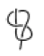
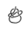
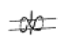
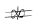
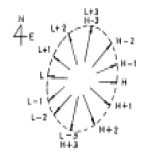
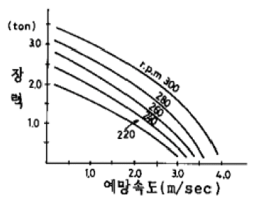

어로산업기사 (2005-05-29 기출문제)
1과목: 어구학
1. 연심로프의 사용목적은?
- 마모의 방지
- 킹크(Kink)의 방지
- 비중의 조절
- 항장력의 증가
(정답률: 94%)

2. 다음 중 해수에 뜨는 섬유는?
- 폴리아미드
- 폴리에틸렌
- 폴리에스터
- 폴리비닐알코올
(정답률: 90%)
3. 매듭없이 매우 작은 그물코로 만들어져 권현망의 자루그물에 많이 사용하는 것은?
- 관통그물감
- 랏쉘그물감
- 여자그물감
- 접착그물감
(정답률: 92%)
4. 끝이 안쪽으로 굽은 낚시는 어떤 고기를 낚을 경우에 유리한가?
- 온순한 고기
- 영리한 고기
- 살려둘 고기
- 억센 고기
(정답률: 79%)
5. 어구의 분류상 재료에 의한 분류 중에서 그물어구(망어구)에 속하는 것은 어느 것인가?
- 명태저층 유자망
- 다랑어 주낙
- 가다랭이 채낚기
- 장어통발
(정답률: 87%)
6. 그물어구의 설계도상에 표시하는 단위 중에서 맞지 않는 것은?
- 줄 및 부속구의 지름은 cm이다.
- 그물실의 구성올의 굵기는 tex이다.
- 그물코의 크기는 mm이다.
- 그물감 또는 줄의 길이는 m이다.
(정답률: 88%)
7. 오징어 낚시에서 오징어가 가장 잘 낚이는 조건은?
- 집어등이 잘 비치는 밝은 부분이 좋다.
- 집어등이 배에 의해서 그늘진 부분이 좋다.
- 배 밑에 집어등을 설치하였을 때 좋다.
- 집어등을 수면에 설치하였을 때 좋다.
(정답률: 89%)
8. 어구 사양서에 기재되는 사항이 아닌 것은?
- 어구의 대표치수, 주요치수, 구조상 특별한 사항
- 그물감의 규격, 성형율
- 뜸줄 구성도, 그물감 전개도
- 뜸, 발돌의 재료 및 수량
(정답률: 80%)
9. 정치망을 설계하는데 기준이 되는 것은?
- 길그물의 길이
- 수심
- 헛통의 길이
- 원통의 길이
(정답률: 97%)
10. 길이 100m 되는 그물실 올의 무게가 7g이면 몇 텍스(tex)인가?
- 7 Tex
- 14Tex
- 140Tex
- 70Tex
(정답률: 87%)
11. 저층 트롤의 뜸 형태로 가장 적합한 것은?
- 편평형
- 장고형
- 구형
- 원기둥형
(정답률: 84%)
12. 기선 저인망의 뜸줄부 성형률이 트롤보다 큰 이유는?
- 그물의 규모가 작기 때문
- 그물 폭이 작기 때문
- 배의 마력이 작기 때문
- 예망속도가 작기 때문
(정답률: 83%)
13. 그물실을 일광에 노출시켰을 때 다음 중 가장 쉽게 약화되는 것은?
- 테트론 그물실
- 폴리에틸렌 그물실
- 비닐론 그물실
- 나일론 그물실
(정답률: 86%)
14. 다음 그림 중 보우라인(Bow line)에 해당하는 것은?




(정답률: 87%)
15. 다음 어구 중 큰 닻을 사용 하는 것은?
- 권현망
- 안강망
- 조기유자망
- 분기초망
(정답률: 97%)
16. 다음 중 저층트롤, 기선저인망, 안강망용 그물감으로 주로 사용되는 섬유는?
- PE
- PA
- PES
- PP
(정답률: 90%)
17. 수공 편망시 2:1의 감목비로 편망하는 것과 같은 효과를 내는 재단법은 어느 것인가?
- 3p1b
- 1p2b
- 1p1b
- 2p1b
(정답률: 81%)
18. 필름(Film) 섬유는 주로 무슨 섬유의 종류로 만드는가?
- 폴리프로필렌
- 폴리아미드
- 폴리에스테르
- 폴리비닐 알콜
(정답률: 83%)
19. 트롤어구에서 망사의 굵기를 d, 그물코의 크기를 ℓ이라 할 때 d/ℓ 값은 그물 저항에 큰 영향을 미친다. 다음 중 d/ℓ값이 가장 작은 부분은?
- 날개 앞쪽 부분
- 천장망
- 자루그물 앞쪽
- 끝자루
(정답률: 66%)
20. 어구를 만드는데 있어서 그물감에 80%의 성형율을 주었더니 32m가 되었다. 이 그물의 원래 길이는?
- 38m
- 40m
- 46m
- 48m
(정답률: 94%)
2과목: 어업기기학
21. 다음 중 초음파와 관계 없는 것은?
- 어군탐지기
- 음향 측심기
- 소나
- 레이더
(정답률: 97%)
22. 어군탐지기란 어느 Energy의 파동을 이용하는 것인가?
- 음파
- 전파
- 광파
- 중력파
(정답률: 87%)
23. 인력을 동력단위로 환산할 때는 연속작업이 가능한 힘을 기준으로 한다. 그 기준은 몇 ㎏.m/sec인가?
- 약 6㎏·m/sec
- 약 12㎏·m/sec
- 약 18㎏·m/sec
- 약 24㎏·m/sec
(정답률: 91%)
24. 다음 기기의 사용 목적이 나머지 셋과 다른 것은?
- 윈치
- 양망기
- 집시드럼
- 네트레코더
(정답률: 92%)
25. 어군탐지기에서 거리 분해능을 결정하는 요인이라고 볼 수 없는 것은?
- 펄스폭
- 펄스주기
- 기록지의 폭
- 기록 심도
(정답률: 70%)
26. 다음 중 마찰차식 어업기계가 아닌 것은?
- 양승기
- 트롤 윈치
- 원추형 권동권양장치
- 양망기
(정답률: 85%)
27. 트롤윈치의 구동 중 정지하는 방법으로 주로 쓰이는 방식은 어느 것인가?
- 밴드 브레이크
- 유압 브레이크
- 공압 브레이크
- 토오크 브레이크
(정답률: 93%)
28. 어군탐지기의 송수파기의 방식이 아닌 것은?
- 자왜식
- 압전식
- 전왜식
- 전자식
(정답률: 67%)
29. 음파원격어탐(Net recorder)으로 알 수 없는 것은?
- 어군의 입망 상황
- 망구의 심도
- 어군의 종류
- 망구의 전개상황
(정답률: 91%)
30. 어군 탐지기에서 수신된 반사파가 기록기에 보내지기 직전에 거쳐야 할 곳은?
- 증폭기
- 변환기
- 발진기
- 수파기
(정답률: 74%)
31. 다음 어업기계류 중에서 양승기가 아닌 것은?
- side roller
- side thruster
- ball winder
- V roller
(정답률: 85%)
32. 트롤 어선에서 4노트로 예망시 저항이 9톤인 어구를 선속 2노트, 권양속도 2노트로 양망하고자 한다. 소요되는 윈치의 축마력은? (단, 1K't 은 0.5m/sec 이다.)
- 80 마력
- 100 마력
- 120 마력
- 140 마력
(정답률: 56%)
33. 포경포 줄의 권양장치는 다음의 방식 중 어느 것인가?
- 권동식
- 마찰차식
- 윈치식
- 스프링식
(정답률: 71%)
34. 양승기에서 감아올릴 수 있는 줄의 장력 T와 억압로울러의 압력 P와의 관계이다. 맞는 것은?
- 압력 P의 제곱에 비례한다.
- 압력 P의 제곱에 반비례한다.
- 압력 P에 비례한다.
- 압력 P에 반비례한다.
(정답률: 88%)
35. 어로기계의 동력전달 방식 중에 가장 널리 이용되고 있는 세가지 방법은 어느 것인가?
- 기계식, 마찰차식, 전기식
- 전기식, 기계식, 유압식
- 마찰차식, 전기식, 전자식
- 유압식, 전자식, 전기식
(정답률: 76%)
36. 원동기의 성능을 결정하는 기준이 되는 것은?
- 소비전력과 회전능률
- 매분당의 회전수와 회전능률
- 매분당의 회전수와 에너지양
- 회전속도와 저항력
(정답률: 97%)
37. 배밖의 줄의 장력이 75㎏, 분당 양승속도를 120m로 감아 올리기 위한 양승기의 순동력은 얼마이어야 하는가?
- 1 마력
- 2 마력
- 3 마력
- 4 마력
(정답률: 80%)
38. 다음 중에서 건착망에서 사용되는 양망기는?
- 파워 블록
- 라인 호울러
- 윈치
- 내압공기 주머니
(정답률: 84%)
39. 어군탐지기의 초음파가 저질에 따라 반사손실이 가장 큰것은?
- 자갈
- 뻘
- 모래
- 암석
(정답률: 73%)
40. 양승기(Line hauler)에서 감아올리는 순동력이 일정할 때 줄에 걸리는 장력과 감아올리는 속도와의 사이에는 기본적으로 어떤 관계가 있게 되는가?
- 비례관계
- 반비례관계
- 제곱에 비례관계
- 관계없다.
(정답률: 73%)
3과목: 어장학
41. G.E.K에 대한 설명 중 가장 바른 것은?
- 표면류를 측정하는 유속계
- 연안역과 같은 100m 이하 전 해역의 해류 측정에 편리
- 항상 선박의 진행방향에 대한 해류의 분속을 측정
- 지구 자장내에서 움직이는 해수의 전위차를 예인하는 두 전극의 기전력으로서 유속을 측정
(정답률: 87%)
42. 그림은 어느 해역의 조류도이다. 고조시각이 12:00 이고, 유속이 0.5노트이면 10:00의 유향 및 유속은 얼마로 추산되는가?

- 유향 : SE, 유속 0.7 노트
- 유향 : SW, 유속 0.7 노트
- 유향 : NW, 유속 0.5 노트
- 유향 : NE, 유속 1.0 노트
(정답률: 68%)
43. 어류의 산란 성공율을 높이기 위해 취하는 행동은?
- 어군을 형성한다.
- 반일주기 회유를 한다.
- 일주기 회유를 한다.
- 연직 회유를 한다.
(정답률: 93%)
44. 한랭한 기단이 온난한 해면위를 지날때 해상에서 발생하기 쉬운 안개는?
- 복사안개
- 증기안개
- 전선안개
- 이류안개
(정답률: 89%)
45. 갈치 어장과 생태의 설명 중 잘못된 것은?
- 멸치 어획과 상관관계가 크다.
- 서해저층 냉수와 북상난류 및 연안수가 발달하여 조경이 명확할 때 풍어를 이룬다.
- 평시에는 연안의 얕은 곳에 살다가 산란시에는 100m 정도의 뻘층의 깊은 곳으로 이동한다.
- 저층 냉수가 강하고 북상난류가 약할 때 흉어를 이룬다
(정답률: 67%)
46. 다음 중 침강류를 발생시키는 주된 요소로만 짝지어진 것은?
- 바람과 밀도
- 조류와 수온
- 수온과 염분
- 발산과 증발
(정답률: 62%)
47. 대구의 생태에 대한 설명 중에서 틀린 것은?
- 주산란장은 진해만과 영일만이다.
- 난류성 어류이다.
- 군집성이 강하다.
- 수직이동이 크다.
(정답률: 75%)
48. 다음 중 어장 오염에 관한 설명 중에서 옳은 것은?
- 열 오염의 결과 수중의 산소가 현격하게 감소한다.
- 하수 오물이나 유기 배설물의 무제한 유입은 해양에 영양 물질을 무제한 공급하므로 해양 생산량을 무제한으로 증대시켜서 유익하다.
- 석유는 모든 생물체에 유독하지만 수면 위에 뜨고 투과층을 형성하기 때문에 가스의 교환이나 햇빛의 통과를 방해하지 않는다.
- 하수 오물과 영양 물질이 함께 작용하여 그 지역의 산소 발생을 증대시키게 된다.
(정답률: 83%)
49. 조석 부등에 관한 설명 중에서 잘못된 것은?
- 월령에 따라 조차가 다르다.
- 달이 남북의 회귀점에 있을 때의 조차가 크다.
- 원지점보다 근지점의 조차가 크다.
- 대조승이란 사리때 기준면에서 대조 평균 고조면까지의 높이를 말한다.
(정답률: 60%)
50. 해양의 깊은 곳에 있어서 빛의 강도와 관계가 가장 적은 요소는?
- 위도
- 일년 중의 시기
- 그날의 시각
- 용존산소
(정답률: 84%)
51. 다음중 수직안정도가 가장 작은 곳은?
- 혼합층
- 제1약층
- 심층
- 영구약층
(정답률: 73%)
52. 일반적으로 폭풍 전후의 1∼2일에 어획이 좋다는 설에 대한 설명 중 가장 적당한 것은?
- 따뜻한 표면수가 외양에서 연안으로 유입되므로
- 표면 수온이 낮아져서
- 표면 수온이 용승으로 인하여 차거워지고 바람으로 인하여 혼합 작용하기 때문에
- 바람이 많이 불어서 파도가 세어지기 때문에
(정답률: 79%)
53. 다음 중 그 양이 가장 많은 것은?
- 식물플랑크톤
- 동물플랑크톤
- 저생생물
- 유영생물
(정답률: 93%)
54. 다음 중 용승역과 주 어획 어종이 가장 잘 짝지어진 것은?
- 페루 - 멸치류
- 캘리포니아 - 문어
- 코스타리카 근해 - 오징어
- 소말리아 연안 - 대구
(정답률: 90%)
55. 다음 중 용승어장이 아닌 곳은?
- 캘리포니아 해류역의 참다랑어 어장
- 알제리 연안의 멸치 어장
- 남아메리카 서해안의 페루 해류역의 가다랭이 어장
- 베링해 및 오호츠크해 명태 어장
(정답률: 80%)
56. 다음 중 양성 주광성이 가장 현저한 어류는?
- 고등어
- 볼락
- 대구
- 명태
(정답률: 87%)
57. 다음 중 우리 나라 연근해 어업을 해구별로 동해구 어업, 서해구 어업, 남해구 어업으로 대별할 때 남해구 어업에 속하는 것은?
- 오징어 어업
- 참조기 어업
- 꽁치 어업
- 멸치 어업
(정답률: 83%)
58. 진행속도가 빠르고 뇌우나 돌풍이 예상되는 전선은?
- 온난 전선
- 한냉 전선
- 폐색 전선
- 정체 전선
(정답률: 86%)
59. 조경어장과 관계가 먼 것은?
- 수괴의 경계선은 환경장벽을 이룬다.
- 경계선 부근에 해수의 와동이 생긴다.
- 기온과 바람의 영향을 많이 받는다.
- 경계선 부근에 어장이 형성된다.
(정답률: 89%)
60. 해류 경계의 특징이 아닌 것은?
- 고요하고 거칠은 해양의 대(band)
- 뚜렷한 표면수온 기울기
- 스콜(squall)의 출현
- 소용돌이
(정답률: 76%)
4과목: 어법학
61. 기선저인망에서 갯대가 연결되는 부위는?
- 날개 앞끝과 그물 목줄사이
- 그물 목줄과 후릿줄 사이
- 그물목줄과 갯댓줄 사이
- 후릿줄과 뜸줄, 발줄사이
(정답률: 82%)
62. 정치망 어구의 d/l값이 가장 커야 할 부분은? (단, d : 망사의 직경, l : 망목의크기 )
- 어포부
- 유도그물
- 원통
- 비탈그물
(정답률: 88%)
63. 트롤어구의 예망 중 앞바람을 받을 때 어획이 좋지 않는 이유로 틀린 것은?
- 망고의 상하 운동이 심하다.
- 단위 시간당의 예망 거리가 적어진다.
- 소해 면적이 적어진다.
- 예망 속력이 증가한다.
(정답률: 68%)
64. 최근 안강망에서 가장 많이 잡히는 어종은?
- 참조기
- 부세
- 갈치
- 쥐치
(정답률: 64%)
65. 어떤 자망의 뜸줄 1m당 부력은 150g, 망지 수중무게 30g, 뜸줄의 수중무게 30g, 발줄의 침강력 200g이면 잉여 부력은 얼마인가?
- 90g
- 110g
- 150g
- 230g
(정답률: 53%)
66. 트롤 어선의 구비요건 중 틀린 것은?
- 선체가 견고할 것
- 예망력이 클 것
- 어획물처리 시설이 완벽할 것
- 선회성이 좋을 것
(정답률: 76%)
67. 기선저인망 그물에서 천장망이 하는 주된 역할은?
- 어군의 상부로의 도피방지
- 어군의 옆으로의 도피방지
- 뜸 부력의 그물에의 전달
- 입망했던 어군의 도피방지
(정답률: 91%)
68. 다음은 다랑어류의 분포와 회유에서 보이는 일반적인 현상이다. 사실과 다른 것은?
- 다랑어류는 종에 따라 해류계 별로 분포의 중심을 달리한다.
- 회유는 동일 회유계내의 회유와 회유계간의 회유로 대별 한다.
- 동일 해류계 내의 어군의 이동은 속도가 빨라 발견하기 힘들다.
- 다랑어 어장은 동서로 흐르는 해류로 인해 남북이 좁고 동서로 길며 서식의 경계는 조경과 거의 일치한다.
(정답률: 85%)
69. 안강망 어선이 투양망할 때 여러가지 줄을 윈치로 인도하기 위한 특유의 장치는?
- 윈치드럼
- 켑스턴
- 설용두
- 갤로우스
(정답률: 85%)
70. 다랑어 주낚으로서 구비해야 할 조건이 아닌 것은?
- 줄의 품질이 균일할 것
- 비중이 작을 것
- 마찰에 잘 견딜 것
- 강도와 신도가 충분할 것
(정답률: 83%)
71. 유자망에서 순대말이 현상을 방지하기 위한 대책 중 타당하지 못한 것은?
- 조경어장 가까이에서 조업한다.
- 뜸줄의 꼬임이 안정된 것을 사용한다.
- 뜸줄의 길이에 비해 발줄을 약간 짧게 한다.
- 부력을 너무 크지 않게 한다.
(정답률: 86%)
72. 다랑어 주낙어업용 낚시 미끼로 어획 효과가 가장 좋은 것은?
- 오징어
- 고등어
- 냉동꽁치
- 전갱이
(정답률: 78%)
73. 다음 낙망어구의 부설어장의 선정요건 중 틀린 것은?
- 조류가 가능한 빠른 해역, 즉 유속이 2.0 노트 이상인 해역
- 수심 80m를 한계로 등심선이 가능한 육안에서 먼 해역
- 저질은 모래, 뻘등이고 해저지형이 경사가 심하지 않는 해역
- 어업 근거지에서 가까운 해역
(정답률: 76%)
74. 기선선인망(권현망)어업의 조업법과 외적요인과의 관계에 관한 설명이다. 올바르지 못한 것은?
- 조류는 측면으로 받고 조업하는 때가 많다.
- 아침, 저녁무렵의 예망방향은 태양을 등지고 예망하는 것이 어획율이 좋다.
- 예망이 끝나면 어군의 입망을 위해 약 5분간 모아끌기를 한다.
- 어장이 육지에 가까울때는 육안과 반대방향으로 예망하는 것이 어획율이 좋다.
(정답률: 69%)
75. 아래 그림은 어떤 저인망 기선의 예망력 특성 곡선이다. 어구의 전 저항이 2.0ton일 때 예망속도를 2노트로 하려면 기관에 무리가 가지 않는 기관의 회전수는 얼마로 하면 적당한가?

- 300 rpm
- 280 rpm
- 250 rpm
- 200 rpm
(정답률: 78%)
76. 기선 권현망 어선단에 포함되지 않는 선박은?
- 본선(망선)
- 집어선
- 어탐선
- 가공선
(정답률: 83%)
77. 오징어 유자망에서 그물과 발줄을 연결하는 줄은?
- 돋움줄
- 등노
- 코걸이줄
- 후릿줄
(정답률: 68%)
78. 민어과 어족(민어,조기,부세 등)은 부레를 이용하여 독특한 소리를 낸다. 다음 중 어느 시기에 이 현상이 가장 심한가?
- 치어기
- 월동기
- 회유기
- 산란기
(정답률: 97%)
79. 어장에 도착하여 어군 탐지기로 어군을 발견하면 즉시 그물을 투입하여 어군을 둘러싼 다음 중심에서 소음발생기로 소음을 내어 걸그물에 걸치게 하는 어법의 주 대상종은?
- 방어
- 멸치
- 조기
- 고등어
(정답률: 80%)
80. 납작고기의 생태적 특성 중 틀린 것은?
- 감각기관이 발달되지 않았다.
- 회유의 범위가 광범위 하지 않다.
- 수직이동 범위가 크다.
- 위험에 부딪쳤을 때 유영높이는 크지 않다.
(정답률: 97%)